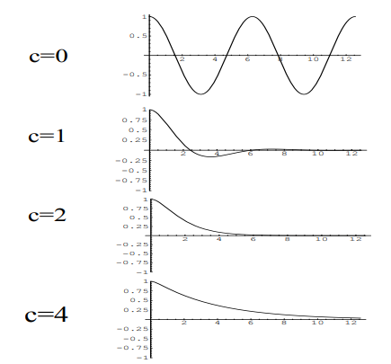
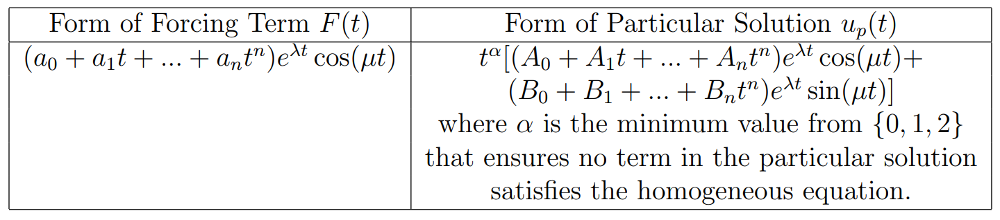
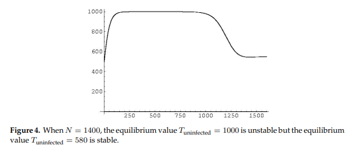
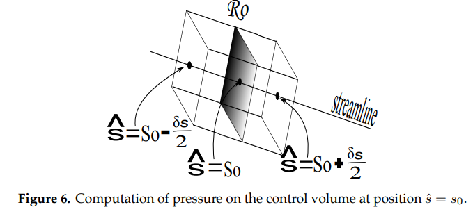
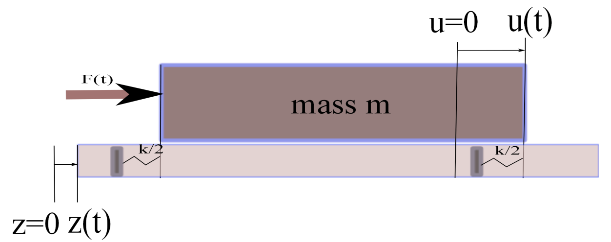
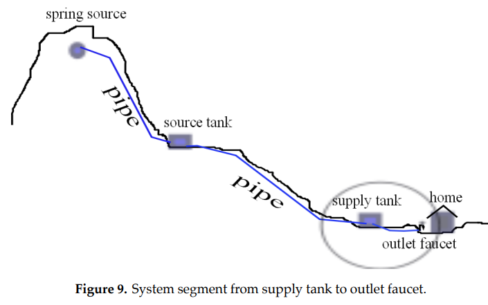
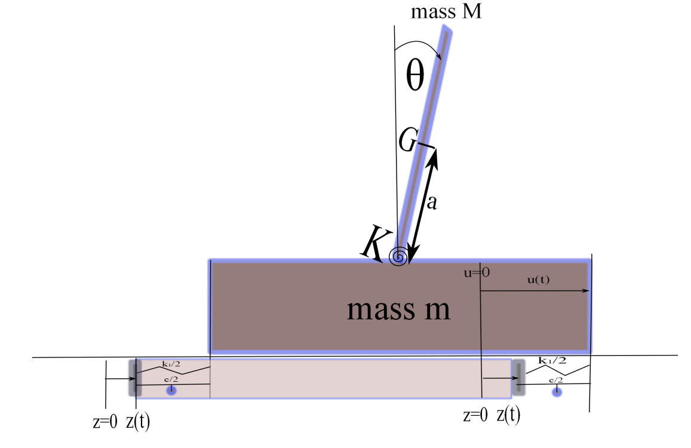

12.6. Earthquake Resistant Construction#
12.6.1. 1. Introduction#
In January 2010, a magnitude 7.0 earthquake hit Haiti, claiming over 200,000 lives. Less than two months later, a much larger 8.8 earthquake hit Chili, and fewer than 1000 lives were lost. Why Chili faired so much better than Haiti was not a result of the accuracy of earthquake predictions (seismology). Rather, lives were saves through the design and retrofitting of earthquake resistant buildings using methods from structural dynamics and civil engineering. In this Module, we will introduce several aspects of earthquake resistant construction. We will begin in Section 2 by discussing how the spring mass equation (normally covered in a first undergraduate level ordinary differential equations course) is fundamental within structural dynamics. In Section 3, we generalize the basic equation using systems of ODE’s to handle multiple-storied structures and other basic building design configurations. Finally, in Section 4, we recommend resources for those interested in further study.
12.6.2. 2. The Fundamental Equation of Structural Dynamics#
Most beginning undergraduate courses in ordinary differential equations study second order equations with constant coefficients; that is, equations of the form
where \(m\), \(c\) and \(k\) are constants and the function \(F(t)\) on the right hand side is sometimes called the forcing term. The dot indicates differentiation with respect to time \(t\). A standard application of this equation is the so called spring mass problem, where \(u(t)\) indicates the position of a mass \(m\) attached to a spring with stiffness constant \(k\). The constant \(c\) is called the damping constant and the forcing term represents an external force acting on the mass such as a magnet. This equation is called the fundamental equation of structural dynamics (FESD).
In the context of analysis of structures undergoing stress created by ground motion due to earthquakes, \(u(t)\) may represent the horizontal motion of the structure, \(m\) the mass of the structure, and \(k\) the stiffness of the structure (which depends on the material used in construction). The damping term represents the design features of the structure which regard its horizontal displacement. An external force on a lower level of the structure (eg. foundation) may result from horizontal acceleration of an upper level (eg. first floor) which is tied down into the lower level. A force on the upper level might be typically due to wind or perhaps in rare cases due to the impact of an object such as a car or tsunami.
12.6.2.1. 2.1 Homogeneous Equation#
If there is no external force, FESD is called a homogeneous equation:
Exact solutions to this equation are well known and depend on the roots \(r_{\pm}= \frac{-c\pm\sqrt{c^2-4mk}}{2m}\) to the characteristic equation
as shown in the table below. (See for example [Boyce and DiPrima 2009].)
Table 1

Exercise 2.1
Find the general solution to the equation
for each choice of the constant \(c\):
a) \(c=0\). b) \(c=1\). c) \(c=2\). d) \(c=4\).
12.6.2.2. Damping#
For simplicity, let \(u(t)\) denote the horizontal displacement at time \(t\) from equilibrium of one end of building foundation with unit mass (\(m=1\)) and spring constant (\(k=1\)) (see figure 1 below).
\(u(t)\) gives the horizontal displacement at time \(t\) of an elastic object with one end fixed.
FIGURE 1:

Given the damping coefficient \(c\ge 0\) and assuming no external force \(F(t)\) acts on the system in the horizontal direction, the equation of motion is
Assuming that the material is expanded by 1 unit and then released from rest, the initial conditions are \(u(0)=1\), \(\stackrel{.}{u}(0)=0\). Using the solutions to Exercise 2.1, the table below gives solutions to the damped equation with these initial conditions for various values of the damping coefficient \(c\).
TABLE 2:

Figure 2 below shows the effect of increasing the damping coefficient \(c\). The vertical axis gives displacement from equilibrium and the horizontal axis represents time.
FIGURE 2: 
{kind=link}
In particular, the effect of the damping may be classified as follows:
\(0\le c<2 \) underdamped (foundation continues to oscillate indefinitely)
\(c=2\) critical damping (change in behavior occurs)
\(c>2 \) overdamped (foundation moves back towards its equilibrium position without oscillating)
In designing earthquake resistant construction, various damping mechanisms have been employed. The more effective the damping, the higher the \(c\) value in the equation describing the motion, thereby eliminating horizontal oscillations of the foundation.
Exercise
2.2 Use the general solutions given in Exercise 2.1 to check the solutions in Table 2.
12.6.2.3. Forcing and Resonance#
In the absence of external forces in the direction of motion, the displacement \(u(t)\) from equilibrium of a one-degree-of-freedom (1-DOF), undamped (\(c=0\)) vibrating media with mass \(m>0\) and spring constant \(k>0\), satisfies the equation
In this case, the general solution is \(c_1\cos ( \sqrt{\frac{k}{m}} ) t + c_2 \sin( \sqrt{\frac{k}{m}} )t \) with natural frequency \(\omega_0 = \sqrt{\frac{k}{m}}\). Without any damping, we expect the motion to be periodic with period \(T_0=\frac{2\pi}{\omega_0}\)
For simplicity, let us assign the parameter values \(m=1\), \(k=4\), and initial conditions \(u(0)=1, \stackrel{.}{u}(0)=0.\) In this case, the solution satisfying these initial conditions is \(u(t)=\cos(2t)\) with natural frequency \(\omega_0 = 2\) and period \(T_0=\pi\).
Let us now consider the effect of introducing an idealized periodic external force \(F(t)=\cos(At)\) (Figure 3) such as might roughly model a quasi-periodic surface shockwave created by an earthquake over a relatively short time span. In this case, our equation becomes
FIGURE 3:

For an equation of the form
the general solution has the form \( u(t)=u_h(t)+u_p(t)\), where \(u_h(t)\) is the general solution to the homogeneous equation (\(m\stackrel{..}{u}+c\stackrel{.}{u}+ku=0\)) and \(u_p(t)\) is a particular solution to the forced differential. Table 3 gives the form of \(u_p(t)\) corresponding to the form of the forcing term \(F(t)\) appearing in the equation.
TABLE 3: 
{kind=link}
Table 4 gives solutions with these initial conditions for various values of the forcing frequency \(A\) Figure 4 shows their graphs.
TABLE 4:

FIGURE 4: 
{kind=link}
Of particular interest is the solution behavior when the forcing frequency \(A\) matches the natural frequency \(\omega_0 = 2\). Resonance is the phenomenon that occurs when the frequency of the forcing term matches the natural frequency of the object in question. When this occurs, the amplitude of the oscillations will increase without bound. In the case of a building, the amplitude would increase until structural failure occurs. (A classic example of resonance is the singer who can break a wine glass merely by matching their voice to the natural frequency of the glass).
Exercise
2.3 How does the introduction of damping affect resonance? That is, analyze, the equation
for small positive \(c\) values. Assume that \(u(0)= \stackrel{.}{u}(0)=0\).
12.6.2.4. Blast Loading#
Earlier, we mentioned that a horizontal external force can act on a foundation by transfer of a load exerted on the first floor, such as a force created by a gust of wind.
where the positive constants \(F_{max}\) and \(T\) represent the maximum blast force and duration of the blast force respectively.
FIGURE 5:

Suppose a building structure with mass \(m=10^4 kg\) is anchored to a foundation in such a way that its resistance to horizontal displacement is modeled by a spring force with constant \(k=10^{10} \frac{kg}{sec^2}\). If a horizontal blast force created by a gust of wind lasts for \(T=.5\) sec, and the building can safely undergo a horizontal displacement of 5x\(10^{-3}\) meters, what is the maximum blast force \(Fmax\) that the building can endure?
FIGURE 6: 
{kind=link}
Using the forcing function \(F(t)\) given by Figure 5 and initial conditions \(u(0)=\stackrel{.}{u}=0\), we first obtain \(u(t)\) satisfying the differential equation
over the time interval \(0\le t \le T\) by means of Table 3 :
where \(\omega_0=\sqrt{\frac{k}{m}}\) is the natural frequency. Next, using the initial conditions \(u_2(T)=u_1(T)=- \frac{Fmax}{k}\), \(\stackrel{.}{u_2}(T)=\stackrel{.}{u_1}(T)= 0\), we obtain the solution for all positive \(t\):
For the parameter values given in the problem, instead of finding the maximum value of \(u(t)\), we instead maximize the response function \(R(t)=\frac {k u(t)}{Fmax}\) given by
Note that \(u(t)\) and \(R(t)\) will have their maximum value at the same time \(t\) and the response function has a more convenient range of values on the vertical axis.
Figure 7 shows the maximum value of \(R(t)\) is \(Rmax=2\).
FIGURE 7:

Exercise 2.4 asks you to find the maximum blast force \(Fmax\) which the building can endure in answer to our original problem.
Exercise
2.4 Using Figure 7 to estimate the maximum value \(Rmax\) of the response function \(R(t)\) , show that the maximum allowable blast force is \(Fmax= 2.5(10^7) N.\)
12.6.2.5. Convolution Integral Method#
In this and the next subsection, following Craig and Kurdila [2006], we present two different methods for solving the same blast equation (knowing a variety of methods is important not only to appreciate theoretical creativity in solution methods, but also practically speaking since one method may be much more conducive than another for obtaining a solution to the blast loading equation for a given forcing function \(F(t)\)).
If an external force \(F(t)\) acts over a short time interval \(0\le t \le \epsilon\), we define its impulse \(I\) by the integral \(I=\int_0^{\epsilon}F(t) dt.\) Our standard approach to modeling the horizontal displacement \(u(t)\) of an undamped building structure due to an impulse force \(F(t)\) is to use the initial value problem
Alternately, if we integrate the ODE from 0 to \(\epsilon\), we obtain
where \(\stackrel{-}{u} = \frac{1}{\epsilon} \int_0^{\epsilon} u(t) dt\) is the average horizontal displacement on the time interval \(0\le t \le \epsilon\). In the limit as \(\epsilon \rightarrow 0\), the term \(k\epsilon \stackrel{-}{u} \rightarrow 0\), and so \(\stackrel{.}{u}(0)=I/m.\) In other words, an impulse force acting over a very short time interval may be modeled by the IVP
The solution is called the impulse response function \(u(t) = \frac{I}{m\omega_0} \sin(\omega_0 t)\) (where \(\omega_0=\sqrt{\frac{k}{m}}\)). Setting \(I=1\), we obtain the unit impulse response function \(h(t) = \frac{\sin (\omega_0 t)}{m\omega_0}\).
In a similar way, if an impulsive force \(dI=F(\tau)d\tau\) acts over a short time interval \(\tau < t < \tau + d\tau\), the impulse response of the system is given by \(du(\tau) = \frac{dI}{m\omega_0} \sin (\omega_0 (t-\tau)) = \frac{1}{m\omega_0} F(\tau)\sin (\omega_0 (t-\tau))d\tau \). We may think of an external force \(F\) as being a sequence of impulsive forces acting over small sub-intervals comprising a time interval [0,t]. If we sum up the impulse responses \(du(\tau)\) as \(\tau\) goes from 0 to \(t\), we obtain the response \(u(t)\) as given by the convolution integral.
Applying the Convolution Integral method to solve the triangular blast loading problem, we compute the following convolution integrals to handle the two cases \(0\le t \le T\) and \(t>T\):
If \(0\le t\le T\), \(F(t)= Fmax(\frac{-t}{T} + 1)\), and hence
The case \(t>T\) is left to the reader as Exercise 2.4.1.
Exercise
2.4.1 Apply the Convolution Integral method to solve the triangular blast loading problem for the case \(t>T\).
12.6.2.6. The Laplace Transform Method#
Laplace Transforms provide a third way to solve the triangular blast loading problem. First, recall the definition
To solve the fundamental IVP in structural dynamics, we need the formulae
and
Applying these to the fundamental IVP with \(u(0)=A\) and \(\stackrel{.}{u}(0)=B\) gives
where
It follows that
For simple cases, obtaining the solution \(u(t)\) by finding the inverse transform may require basic algebraic techniques such as completing squares and partial fractions, together with a table of Laplace Transforms such as shown in Table 5.

In Exercise 2.4.2 you are guided through the steps which apply the Laplace Transform Method to solve our triangular blast loading problem.
Exercise
2.4.2 a) First, writing the blast forcing function in the form \(F(t)=(1 - U_T(t))(\frac{-(t-T)}{T})\), show that \(L[u]=\frac{F_{\textup{max}}}{m}\{\frac{-1}{(Ts^2)(s^2+\omega_0^2)}+\frac{1}{s(s^2+\omega_0^2)}+\frac{e^{-Ts}}{Ts^2(s^2+\omega_0^2)}\}\).
b) Show that the transform in part {\bf a)} can be re-written as \(L[u]=\frac{F_{\textup{max}}}{mT\omega_0^2}\{L[T-t-T\cos(\omega_0 t)+\frac{1}{\omega_0}\sin(\omega_0 t) +U_T(t)[t-T-\frac{1}{\omega_0}\sin(\omega_0(t-T))]]\}\).
c) Obtain \(u(t)\) by taking the inverse transform.
12.6.2.7. Ground Motion#
Suppose now in addition to the horizontal motion \(u(t)\) caused by a wind force acting on an undamped building (\(c=0\)) with spring constant \(k\), the ground upon which the building stands may have horizontal motion \(z(t)\) such as might be caused by an earthquake..
FIGURE 8: 
{kind=link}
Let \(w(t)=u(t)-z(t)\) denote the relative motion of the building relative to the ground. Without ground motion, our fundamental equation can be written in the form
With the influence of ground motion, this equation is modified to
Rearranging terms, we obtain
Exercise
2.5 How does ground motion \(z(t)\) effect the fundamental equation of motion?
12.6.3. Two Degree of Freedom Models#
12.6.3.1. Undamped Two-Story Building with Ground Motion#
To this point, we have studied single degree of freedom models, meaning a single function (scalar differential equation) was adequate to describe the system behavior (namely, horizontal displacement of a building structure). In the case where ground motion occurs, we noted it is useful to model the relative motion \(w(t)=u(t)-z(t)\) and consider the ground motion as effectively contributing an inertial force \(- m \stackrel{..}{z}\). In this section we describe a two-degree of freedom (2-DOF) model, in which one wind force \(F_1(t)\) acts on the first floor of a building with horizontal displacement \(u_1(t)\) and a second wind force \(F_2(t)\) acts on the second floor of the building with horizontal displacement \(u_2(t)\). We also assume an earthquake creates horizontal ground motion \(z(t)\).
FIGURE 9: 
{kind=link}
The following two principles are used to construct the equations of motion:
(i) motion of a floor directly below another floor effectively creates a reverse inertial force on the upper floor (Exercise 2.5); and
(ii) if a building maintains its structural integrity (floors do not separate from each other), forces exerted by adjacent floors on each other must be equal in magnitude and opposite in direction;
Applying these principles, we obtain the following system of differential equations for the relative displacements \(w_1(t)=u_1(t)-z(t)\) and \(w_2(t)=u_2(t)-z(t)\):
Observing that \(u_2-u_1=w_2-w_1\) and \(m_i\stackrel{..}{w_i}=m_i\stackrel{..}{u_i}-m_i\stackrel{..}{z}\) we obtain
This system can be written as,
where \(W=\left(\begin{array}{c}w_1\\w_2\end{array}\right)\) represents the relative displacements, \(M=\left(\begin{array}{cc}m_1&0\\0&m_2\end{array}\right)\) represents the mass of the floors, \(K=\left(\begin{array}{cc}k_1+k_2&-k_2\\-k_2&k_2\end{array}\right)\) represents the spring constants, and \(F=\left(\begin{array}{c}F_1-m_1\stackrel{..}{z}\\F_2- m_2\stackrel{..}{z}\end{array}\right)\) contains the wind force and the inertial force caused by the ground motion.
Exercise
3.1 Set up a three degree-of-freedom (3-DOF) model \(M\stackrel{..}{W}+KW=F\) which governs the respective relative displacements \(w_1(t)=u_1(t)-z(t)\), \(w_2(t)=u_2(t)-z(t)\), \(w_3(t)=u_3(t)-z(t)\) of the first three floors of a building with ground motion \(z(t)\) and respective wind forces \(F_1(t)\), \(F_2(t)\), and \(F_3(t)\).
12.6.3.2. 2-DOF Forced Free Vibration#
We now illustrate how to solve a 2-DOF system of the form \(M\stackrel{..}{W}+KW=F\), where
\(W=\left(\begin{array}{c}w_1\\w_2\end{array}\right)\),
\(M=\left(\begin{array}{cc}m_1&0\\0&m_2\end{array}\right)\) ,
\(K=\left(\begin{array}{cc}k_1+k_2&-k_2\\-k_2&k_2\end{array}\right)\), and
\(F=\left(\begin{array}{c}F_1-m_1\stackrel{..}{z}\\F_2- m_2\stackrel{..}{z}\end{array}\right)\).
Consider the simple case where \(m_1=1,m_2=2, k_1=k_2=1, F_1=1,\) \(F_2=0\) and \(z(t)=t\). We use the following steps (see Craig and Kurdila [2006]) to solve this system:
(i) Multiplying by \(M^{-1}\), we write the equation in the form \(\stackrel{..}{W}+ \stackrel{\sim}{K} W = \stackrel{\sim}{F}\):
$\left(\begin{array}{cc}1&0\0&2 \end{array}\right) \left(\begin{array}{c}\stackrel{..}{w_1} \ \stackrel{..}{w_2}\end{array}\right)
\left(\begin{array}{cc}2&-1-1&1 \end{array}\right) \left(\begin{array}{c}w_1 \ w_2\end{array}\right) = \left(\begin{array}{c}1 \ 0\end{array}\right) \Rightarrow $
$ \left(\begin{array}{c}\stackrel{..}{w_1} \ \stackrel{..}{w_2}\end{array}\right)
\left(\begin{array}{cc}2&-1-1/2&1/2 \end{array}\right) \left(\begin{array}{c}w_1 \ w_2\end{array}\right) = \left(\begin{array}{c}1 \ 0\end{array}\right) $.
(ii) Next, we assume the homogeneous equation \(\stackrel{..}{W_h}+ \stackrel{\sim}{K} W_h = 0\): has a solution of the form \( W_h = \left(\begin{array}{c}w_{h_1} \\ w_{h_2}\end{array}\right) = \left(\begin{array}{c}A_1 \\ A_2\end{array}\right) \cos(\omega t - \alpha)\). Observing that \(\stackrel{..}{W_h}= \left(\begin{array}{c}\stackrel{..}{w_{h_1}} \\ \stackrel{..}{w_{h_2}}\end{array}\right) = -\omega^2 \left(\begin{array}{c}A_1 \\ A_2\end{array}\right) \cos(\omega t - \alpha) = -\omega^2 W_h\), we have \(-\omega^2W_h+\stackrel{\sim}{K}W_h=0\) so \(\omega^2\) is an eigenvalue of \(\stackrel{\sim}{K}\): \((\stackrel{\sim}{K} - \omega^2 I) W_h=0 \):
\(\left(\begin{array}{cc}2-\omega^2&-1\\-1/2&1/2-\omega^2 \end{array}\right) \left(\begin{array}{c}A_1 \\ A_2\end{array}\right) = \left(\begin{array}{c}0 \\ 0\end{array}\right)\).
(iii) To find non-trivial eigenvectors \(\left(\begin{array}{c}A_1 \\ A_2\end{array}\right)\) (meaning that \(A_1\) and \(A_2\) are not both zero), the determinant of the coefficient matrix, namely \((2-\omega^2)(\frac{1}{2}-\omega^2)-\frac{1}{2}\), must be zero. This gives two values for \(\omega^2\), and each has a corresponding eigenvector \(\Omega\) obtained by setting \(A_1=1\):
\(\omega_1^2=\frac{5+\sqrt{17}}{4}\), \hspace{.2in} \(\Omega_1 = \left(\begin{array}{c}1 \\ \frac{3-\sqrt{17}}{4} \end{array}\right)\) \vspace{.1in}
\(\omega_2^2=\frac{5-\sqrt{17}}{4}\), \hspace{.2in} \(\Omega_2 = \left(\begin{array}{c}1 \\ \frac{3+\sqrt{17}}{4} \end{array}\right)\).
\vspace{.1in}
(iv) Let \(\Phi = \left(\begin{array}{cc}\Omega_1 & \Omega_2 \end{array}\right) = \left(\begin{array}{cc}1&1\\ \frac{3-\sqrt{17}}{4} &\frac{3+\sqrt{17}}{4} \end{array}\right) \) contain these eigenvectors of \(\stackrel{\sim}{K}\).
Returning to the non-homogeneous problem, the transformation \(W= \Phi X = \Phi \left(\begin{array}{c}x_1(t) \\ x_2 (t)\end{array}\right)\) gives \(\Phi\stackrel{..}{X} +\stackrel{\sim}{K} \Phi X = \stackrel{\sim}{F} \Rightarrow \stackrel{..}{X} + \Phi^{-1}\stackrel{\sim}{K}\Phi X = \Phi^{-1}\stackrel{\sim}{F} \). Since \(\Phi^{-1}\stackrel{\sim}{K}\Phi =\left(\begin{array}{cc}\omega_1^2&0\\0&\omega_2^2 \end{array}\right) \) , we obtain the following uncoupled equations for \(x_1\) and \(x_2\):
For given initial conditions (specifying the values of \(x_i(0)\) and \(\stackrel{.}{x_i}(0)\)), we obtain \(x_1(t)\) and \(x_2(t)\) in the standard way. Finally, \(W\) is obtained from \(W= \Phi X\).
Exercise
3.2 Solve for \(w_1(t)\) and \(w_2(t)\) given the initial conditions \(w_1(0)=w_2(0)= \stackrel{.}{w_1}(0)= \stackrel{.}{w_2}(0)=0\).
12.6.3.3. Solving Undamped 2-DOF Systems#
Following Craig and Kurdila [2006], we present a general method for solving a 2-DOF system such as can be used to describe a two-story building subject to wind forces and ground motion, namely
where \(W=\left[ \begin{array}{c} w_1(t)\\ w_2(t) \end{array} \right]\), \(M=\left[ \begin{array}{cc} m_{11}&m_{12}\\ m_{21}&m_{22} \end{array} \right]\), \(K=\left[ \begin{array}{cc} k_{11}&k_{12}\\ k_{21}&k_{22} \end{array} \right]\) and \(F=\left[ \begin{array}{c} F_1(t)\\ F_2(t) \end{array} \right]\).
First we consider the unforced system to determine the natural frequency of the building. If we assume the building maintains its integrity, both floors will have the same natural (circular) frequency \(\omega\), and phase shift \(\alpha\), although the amplitudes may be different. In particular, we set \(W=\left[ \begin{array}{c} A_1\cos(\omega_0 t - \alpha)\\ A_2\cos(\omega_0 t - \alpha) \end{array} \right]\). \(\omega\) must then solve the eigenvalue problem
or in other words, the characteristic equation
Solving this characteristic equation, we obtain \(\omega_1\) and \(\omega_2\) with \(\omega_1^2 \le \omega_2^2\). Next, using the equation
we set \(A_1=1\) and call the corresponding values of \(A_2\) from the above equations \(\beta_1\) and \(\beta_2\), where
\(\beta_1\) and \(\beta_2\) are called natural (real) modes. The general solution is then obtained as
where the constants \(c_1, c_2, \alpha_1,\alpha_2\) are determined from the initial conditions. The mode shapes (i.e. eigenvectors) are defined as
\(\Phi_1= \left[ \begin{array}{c} 1\\ \beta_1 \end{array} \right]\) and \(\Phi_2= \left[ \begin{array}{c} 1\\ \beta_2 \end{array} \right]\)
The solution can be expressed as
Exercise
3.3 Suppose \(K=\left[ \begin{array}{cc} 1000&-1000\\ 1000&2000 \end{array} \right]\) and \(M=\left[ \begin{array}{cc} 2&0\\ 0&3 \end{array} \right]\). Determine the natural frequencies \(\omega_1\) and \(\omega_2\) and mode shapes \(\Phi_1\) and \(\Phi_2\).
12.6.3.4. One Story Damped-Building with Ground Motion and a Tilting Tower#
In this section we describe another 2-DOF model, which, in addition to one wind force acting on a one-story building creating a horizontal displacement \(u(t)\), a second wind force effectively causes a vertical tower atop the building to tilt as modeled by a second function \(\theta(t)\) which describes the amount of rotation of the tower (See Figure 10).
The same parameters, namely \(m\) (mass of the building), \(k\) (spring force) and \(c\) (damping force) are used for the horizontal building motion \(u(t)\). New parameters needed include:
\(M\) (mass of the tower);
\(a\) (vertical distance from the top of the building to the center of mass of the tower); and
\(I_G\) mass moment of inertia of the tower about its center of mass. (A rigid body with angular speed \(\alpha=\frac{d\theta}{dt}\) has kinetic energy \(\frac{1}{2} I_G \alpha^2\).)
Following Craig and Kurdila [2006], the equations for \(u(t)\) and \(\theta(t)\) are both derived from Newton’s Law \(F=ma\):
FIGURE 10: 
{kind=link}
Building: \(m \stackrel{..}{u}(t) = -k(u-z) -c(\stackrel{.}{u}-\stackrel{.}{z})-M( \stackrel{..}{u}+ a \stackrel{..}{\theta} ) \)
Tower: \(I_G \stackrel{..}{\theta} = -K \theta +Mg a \theta - M ( \stackrel{..}{u}+ a \stackrel{..}{\theta} ) a \).
Let \(U(t) =\left( \begin{array}{c} u(t) \\ \theta(t) \end{array} \right)\). T{\flushleft In} Exercise 3.4 you are asked to show that \(U(t)\) satisfies an equation of the form
Note that the form of this differential equation is exactly the same as the fundamental equation!
Exercise
3.4 Identify the components of the matrices \(U\), \(M\), \(C\), \(K\) and \(F(t)\) in Figure 10.
12.6.3.5. References#
Astiz, Luciana and Hiroo Kanamori. ÒAn Earthquake Doublet in Ometepec, Guerrero, Mexico.Ó Physics of the Earth and Planetary Interiors 10 October 1983: 24-45.
Boyce, William E. and R.C. DiPrima. 2009. Elementary Differential Equations (9E), Hoboken, New Jersey: John Wiley & Sons.
Building Seismic Safety Council. 2006. Homebuilder’s Guide to Earthquake Resistant Design and Construction. Washington D.C.: National Institute of Building Sciences.
Chopra, Anil. 2007. Dynamics of Structures: Theory and Application of Earthquake Engineering. Upper Saddle River, NJ: Pearson Prentice Hall.
Craig, Roy R., A Kurdila. 2006. Fundamentals of Structural Dynamics. Hoboken, New Jersey: John Wiley & Sons.
Nishenk, S. P. and S. K. Singh. ÒThe Acapulco-Ometepec, Mexico, Earthquakes of 1907-1982: Evidence for a Variable Recurrence History.Ó Bulletin of the Seimological Society of America, Vol. 77, No. 4 August 1987: 1359-1367.